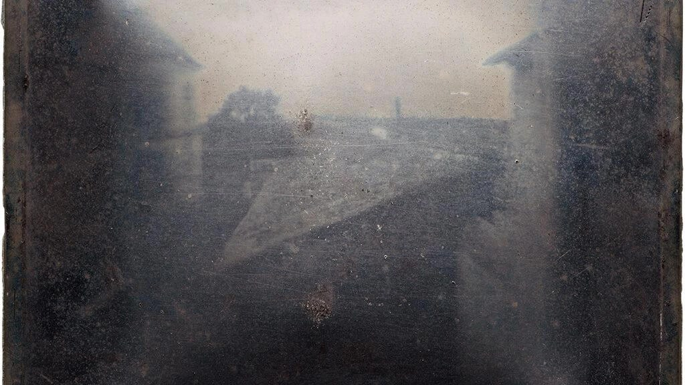
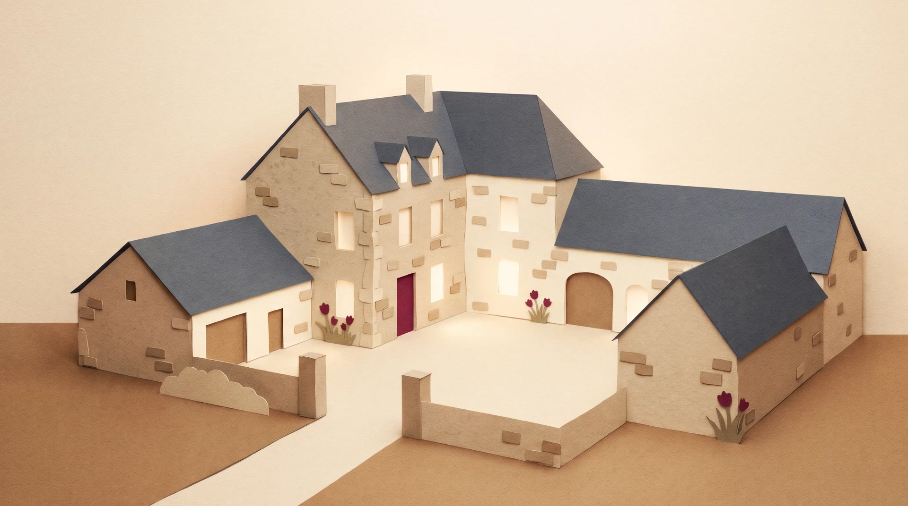

Source: Niépce, c. 1827 · Harry Ransom Center
Illustration
Illustration

Illustration
Illustration
Source: Niépce, View from the Window at Le Gras, c. 1827 · Harry Ransom Center

Illustration
Illustration
Source: Niépce, c. 1827 · Harry Ransom Center
Source: Niépce, c. 1827 · Harry Ransom Center

Illustration
Illustration
The first surviving photograph
Niépce · c. 1827
In the 1820s,
at his country
house at Le
Gras,
he coated a
pewter plate with
a kind of
natural asphalt that
hardens in light.
He put it
in a camera
at an upstairs
window,
and he waited.
Not seconds.
What survived is
a blurry view
of rooftops and
a courtyard,
the sun seeming
to light both
sides at once
because the exposure
lasted so long.
This is the
first surviving photograph.
The museum that
holds it today
dates it to
1827,
and describes it
carefully:
the earliest surviving
photograph made with
a camera.
Niépce,
not Daguerre,
is the first
photographer whose camera
image still exists.